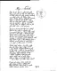
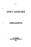
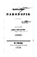
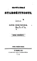
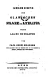
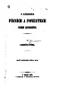
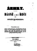

Zlatý fond SME vzniká v spolupráci s Ústavom slovenskej literatúry SAV
RSS výstup diel Zlatého fondu (Viac informácii)
A | B | C | Č | D | E | F | G | H | Ch | I | J | K | L | M | N | O | P | R | S | Š | T | U | V | W | Z | Ž
O
- Ľudovít Okánik (1869 — 1944)
- Ján Ondruš (1932 — 2000)
- Samuel Ormis (1824 — 1875)
-
Pavol Országh-Hviezdoslav (1849 — 1921)
- 1869. (I.)
- 1869. (II.)
- 1916 — 1920
- Agar
- Azyl
- Žalmy a hymny
- Básne príležitostné
- Básnické prviesenky Jozefa Zbranského
- Bútora a Čútora
- Dozvuky I
- Dozvuky II
- Dozvuky III
- Ežo Vlkolinský
- Gábor Vlkolinský
- Hájnikova žena
- Herodes a Herodias
- Kain
- Korešpondencia P. O. Hviezdoslava so Svetozárom Hurbanom Vajanským a Jozefom Škultétym
- Kratšia epika historická a spoločenská
- Kratšia epika zo života dedinského ľudu
- Krvavé sonety
- Letorosty I
- Letorosty II
- Letorosty III
- Na obnôcke
- Poludienok
- Prechádzky jarom
- Prechádzky letom
- Prvý záprah
- Ráchel
- Sonety
- Stesky 1
- Stesky 2
- Stesky 3
- Stesky 4
- V žatvu
- V pamäť
- Večera
- Vzhledanie
- Z básní, venovaných A. Medzihradskému
Historické tlače
 Mlyn v Tatrách (fragment) (rukopis; 1921) - Adolf Svätopluk Osvald (1839 — 1876)
- Anton Ottmayer (1796)
P
-
Ján Palárik (1822 — 1870)
- Ako má byť veselohra usporiadaná, čili Obrana veselohry „Drotár“
- Dôležitosť dramatickej národnej literatúry
- Drotár
- Druhá obrana Drotára
- Inkognito
- O vzájomnosti slovanskej
- Posúdenie dramatických kusov o vypísané dvesto a sto zlatové odmeny sa uchádzajúcich od Jana Palárika, úda posudzujúceho výboru
- Za reč a práva ľudu
- Zmierenie alebo Dobrodružstvo pri obžinkoch
- Juraj Palkovič (1769 — 1850)
- František Patočka (1836 — 1906)
-
Viliam Pauliny-Tóth (1826 — 1877)
- Artúr a Lenóra
- Škola a život
- Ľudská komédia
- Básne
- Drotári
- Dualizmus a historické právo
- Dva hráči. Pravdivá událosť
- Dvaja Justhovci
- Dvá olejkári
- Jedna noc na Považí
- Králova žena
- Kyčina
- Listy Maríne Hodžovej
- Náš človek
- Nový rok
- Politika oportunity
- Povesť o Turovi
- Slovák a Nemec
- Slovenské bájeslovie
- Slovenský pravopis
- Staré i nové piesne V. Podoľského
- Tajna
- Trenčiansky Matúš
- Tri dni zo Štúrovho života
- Trinásta pieseň
- Augustín Paulovič (1850 — 1927)
- Ferdinand Písecký (1879 — 1934)
- Elena Petrovská (1890 — 1927)
- Štefan Petruš (1783 — 1831)
- Ambro Pietor (1843 — 1906)
- Štefan Pilárik (1615 — 1693)
- Dlhomír Poľský (1864 — 1935)
- Jozef Podhradský
-
Ľudmila Podjavorinská (1872 — 1951)
- Žena
- Čarovné skielka
- Čin-Čin
- Balady
- Baránok Boží
- Dratvík a Cverna
- Epizódka
- Fako Ďura Kotúlku
- Išli svrčky poza bučky
- Klobúk
- Kmotrovia figliari
- Lyrický epilóg
- Lyrika z rokov 1896 — 1918
- Na prievoze
- Na záletoch
- Nad hrobom
- Ondráš
- Povesť, aká mala byť
- Princ a Princesa
- Protivy
- Publicistika
- Saša
- Slávny cech
- Sokovia
- Veršovaná epika
- Vlastný životopis
- Z vesny života
- Zajko Bojko
- Zázračná voda
- Edgar Allan Poe (1809 — 1849)
- Rudolf Pokorný (1853 — 1887)
- Karel Poláček (1892 — 1945)
- Josef Polák (1886 — 1944)
- Jiří Polívka (1858 — 1933)
- Vladimír Polívka (1893 — 1938)
- Anton Prídavok (1904 — 1945)
- Alexander Sergejevič Puškin (1799 — 1837)
R
-
Martin Rakovský (1535 — 1579)
- Spis 1. „Proklov astronomický systém“
- Spis 10. „O svetskej vrchnosti“
- Spis 11. „Božskému Maximiliánovi II.“
- Spis 12. „Epicédiá na smrť Martina Rakovského.“
- Spis 2. „Elégie a epigramy“
- Spis 3. „Opísanie českého mesta Loun“
- Spis 4. „Blahoprajné prejavy“
- Spis 5. „Najjasnejšiemu vladárovi a pánovi, pánu Maximiliánovi“
- Spis 6. „O skone pána Juraja Rakovského“
- Spis 7. „Štyri kapitoly z prorokov“
- Spis 8. „Farragines“
- Spis 9. „O smrti slávneho a cnosťou a vzdelaním vynikajúceho magistra Mateja Rakovského z Rakova“
- Martin Rázus (1888 — 1937)
- Ota Resch (1888 — 1929)
- Magdalena Dobromila Rettigová (1785 — 1845)
- Gustáv Reuss (1818 — 1861)
- Ľudevít Reuss (1822 — 1905)
- Ján Rezik (1711)
- Ľudovít V. Rizner (1849 — 1913)
- Ján Roháček (1869 — 1939)
- Marie Rosická
- Peter Víťazoslav Rovnianek (1867 — 1933)
-
Vladimír Roy (1885 — 1936)
- Cez závoj
- Keď miznú hmly
- Národný hrdina generál dr. M. R. Štefánik a jeho mausoleum na Bradle
- Neznámy prorok babylonského vyhnanstva
- Pavel Országh Hviezdoslav
- Peruťou sudba máva
- Rosou a tŕním
- Výber z básní nepojatých do zbierok, napísaných po prevrate
- Výber z knižne nevydaných básní, napísaných do roku 1918
- Zvlnený prameň
-
Kristína Royová (1860 — 1936)
- Abigajil Karmelská
- Ako Kvapôčka putovala
- Ako prišli lastovičky domov
- Ako zbohatnúť
- Ako zomieral Sláviček
- Šťastie
- Šťastlivé Vianoce
- Šťastní ľudia
- Šťastný Štedrý deň
- Bez Boha na svete
- Deti hauzírerov
- Divné milosrdenstvo
- Druhá žena
- Kde bol jeho otec?
- Keď nikde nebolo pomoci
- Keď sa život začínal
- Kráľovná zo Sáby
- Lótova žena
- Moc svetla
- Na rozhraní
- Navrátený raj
- Náman Sýrsky
- Opilcovo dieťa
- Otcovrah
- Peterko
- Prišiel domov
- Slnečné dieťa
- Sluha
- So svetlom
- Splnená túžba
- Staniša
- Stratení
- Susedia
- To, čo večne trvá
- Traja kamaráti
- Tuláci
- V pevnej ruke
- V slnečnej krajine
- Výstražný sen
- Vo vyhnanstve
- Za presvedčenie
- Za svetlom
- Za vysokú cenu
- Pavol Rubigal
S
- Franko Víťazoslav Sasinek (1830 — 1914)
- Ondrej Seberini (1824 — 1895)
- William Shakespeare (1616)
- Pavol Odorik Silaši (1842 — 1895)
- Ján Silván (1493 — 1572)
- Ján Simonides (1708)
- Daniel Sinapius-Horčička st. (1640 — 1688)
-
Božena Slančíková-Timrava (1867 — 1951)
- Ťažké položenie
- Ťapákovci
- Bál
- Bez hrdosti
- Boj
- Chudobná rodina
- Dve doby
- Hrdinovia
- Marino súženie
- Márnosť všetko
- Mocnár
- Mojžík
- Mylná cesta
- Na jednom dvore
- Nemilí
- Nijakej radosti
- Ondro Hľonzo
- Páva
- Pódi
- Pomocník
- Pozde
- Príde čas…
- Prípad Jana Hrkaľu
- Skúsenosť
- Skon Paľa Ročku
- Strašný koniec
- Tak je darmo…
- Tá zem vábna…
- U Kanátov
- V čas vojny
- V ktorú stranu?
- V predvečer
- Všetko za národ
- Víťazstvo
- Veľké šťastie
- Veľký majster
- Záplava
-
Andrej Sládkovič (1820 — 1872)
- České prvotiny
- Básne štyridsiatych a päťdesiatych rokov nepojaté do Spisov básnických 1861
- Detvan
- Dramatický zlomok
- Gróf Mikuláš Šubić Zrínsky na Sihoti
- Kratšie básne
- Marína
- Milica
- Mongoli
- Náboženská poézia
- Nezaľúbení zaľúbenci
- Posestrima
- Príležitostné básne z druhej polovice šesťdesiatych rokov
- Príležitostné básne z prvej polovice šesťdesiatych rokov
- Sôvety v rodine Dušanovej
- Svätenie pamiatky slovenského básnika Andreja Sládkoviča
- Svätomartiniada
- Vlastenecké básne z druhej polovice šesťdesiatych rokov
- Vlastenecko-meditatívne básne z prvej polovice šesťdesiatych rokov
Historické tlače
 Spisy básnické Andreja Sládkoviča (Nákladom Eugena Krčmeryho v B. Bystrici; 1961) - Benignus Juraj Smrtník (1650 — 1710)
- Pavol Socháň (1862 — 1941)
- Vilma Sokolová-Seidlová (1859 — 1941)
- Ján Stacho (1936 — 1995)
- Kornel Stodola (1866 — 1946)
- Emil Stodola (1862 — 1945)
Š
-
Pavol Jozef Šafárik (1795 — 1861)
- Šafárik o sebe
- Dejiny slovanského jazyka a literatúry všetkých nárečí. Úvod
- Dejiny slovanského jazyka a literatúry všetkých nárečí. Juhovýchodní Slovania
- Dejiny slovanského jazyka a literatúry všetkých nárečí. Severozápadní Slovania
- Hlas o Štúrovej jazykovej reforme
- Je zvrchovaný čas
- O Aristofanovi a jeho Oblakoch
- Pamiatky dávneho písomníctva Juhoslovanov
- Prívet k Slovanom
- Prehľad českej literatúry na rok 1841
- Reč na Slovanskom sjazde roku 1848
- Slovanské starožitnosti I
- Slovanské starožitnosti II
- Slovanský národopis
- Slowenskie piesně
- Starobylosť Slovanov v Európe
- Výňatok z prednášky v Novom Sade 1819
- Vysvetlenie niektorých gramatických foriem v slovanskom jazyku
- Z listov
Historické tlače
 Slowanský národopis (W Praze. Nákladem wydawatele; 1842)  Slowanské starožitnosti (W Praze. Tiskem Jana Spurného; 1837)  Geschichte der slawischen Sprache und Literatur nach allen Mundarten (Ofen Mit kön.ung. Universitäts - Schriften; 1826) - Ján Šúr
- Emil Šedivý (1872 — 1923)
- Albert Škarvan (1869 — 1926)
- August Horislav Škultéty (1819 — 1892)
- Jozef Škultéty (1853 — 1948)
-
Ľudovít Štúr (1815 — 1856)
- Ústrojnosť a organizmus reči slovenskej
- Časopisecké zprávy
- Básne
- Devätnáste storočie a maďarizmus
- Hlas k rodákom
- Hlas proti Hlasom
- K odohnaniu ovadov
- Nárečie slovenské alebo potreba písania v tomto nárečí
- Nárečie slovenské alebo potreba písania v tomto nárečí
- Náuka reči slovenskej
- O národných povestiach a piesňach plemien slovanských
- Obranné boje
- Politické state a prejavy
- Posudky a recenzie
- Posudky a recenzie II
- Príspevky a recenzie
- Reči a prednášky
- Slovanstvo
- Slovanstvo a svet budúcnosti
- Slovanstvo a svet budúcnosti
- Spevy bohatierske
- Spomienky
- Výber z článkov
Historické tlače
 O národních písních a pověstech plemen slovanských. (V Praze. V kommissí u Františka Řivnáče; 1853) - Milan Rastislav Štefánik (1880 — 1919)
- Igor Branko Štefánik (1873 — 1940)
- Daniel Šustek (1846 — 1927)
- František Švantner (1912 — 1950)
T
- Juraj Tesák Mošovský (1547 — 1617)
- Oľga Textorisová (1880 — 1938)
- Alois Thuma (1838 — 1914)
- Emanuel Tilsch (1866 — 1912)
-
Anton Emanuel Timko (1843 — 1903)
- Čarodejný bozk
- Drotárik
- Hadí ostrov na Čiernom mori
- Hrúzyplná noc
- Lovena
- Macko
- Mátohy niet!
- Na Likave
- Návštevou u Smrti
- Otrava ľudu
- Popelka
- Prechádzka po pekle
- Prostonárodnie slovenské priadky
- Stručný opis Svätej zeme Palestíny
- Výlet do Asie
- Výprava na severnú točňu
- Výskumy z Mesiaca
- Verný psíček
- Vlk špekulant
- Vo väzení
- Lev Nikolajevič Tolstoj (1828 — 1910)
- Alexej Nikolajevič Tolstoj (1883 — 1945)
- Samo Tomášik (1813 — 1887)
- Adam Trajan-Benešovský (1586 — 1650)
-
Juraj Tranovský (1592 — 1637)
- Cithara sanctorum. Díl 1. Písně duchovní k časům zasvěceným církevního roku
- Cithara sanctorum. Díl 2. Písně duchovní na hlavní články víry
- Cithara sanctorum. Díl 3. Písně nábožné o křesťanském smýšlení a obcování
- Cithara sanctorum. Díl 4. Písně nábožné z ohledu na čas, jeho částky, dary a potřeby
- Cithara sanctorum. Díl 5. Písně duchovní o posledních věcech
- František Dobromysl Trnka (1798 — 1837)
- Ján Trokan (1810 — 1894)
- Andrej Truchlý (1841 — 1916)
U
- Pavol Ušák Oliva (1914 — 1941)
- Rehor Uram-Podtatranský (1846 — 1924)
-
Ferko Urbánek (1859 — 1934)
- Škriatok
- Život
- Ó, tie ženy!
- Báj ružosadu
- Beh žitia
- Boh
- Desatoro čitateľom
- Diabol v raji manželskom
- Dobrá bolesť, čo dá pojesť
- Dramatická literatúra 2. Činohry
- Dramatická literatúra 2. Detské hry príležitostné
- Dramatická literatúra 2. Detské hry pre každú príležitosť
- Dramatická literatúra 2. Drámy celovečerné
- Dramatická literatúra 2. Hry príležitostné
- Dramatická literatúra 2. Hry veľkonočné a pôstne
- Dramatická literatúra 2. Hry vianočné
- Dramatická literatúra 2. Jednoaktovky vážne
- Dramatická literatúra 2. Jednoaktovky veselé
- Dramatická literatúra 2. O divadle
- Dramatická literatúra 2. Veselohry celovečerné
- Dramatická literatúra. Doplnok
- Hosanna!
- Hriešnica
- Hrob lásky
- Hry celovečerné
- Hry jednoaktové
- Janko a Anička
- Jánošíkov poklad
- Jezuliatko
- Kamenný chodníček
- Kikimora
- Kliatba
- Kliatba a požehnanie
- Kríž pod lipami
- Krutohlavci
- Kysuca
- Mam a klam alebo Falošné diamanty
- Moja vlasť
- Náš pán ujo
- O polnoci
- Oštep a meč
- Obrázky z hôr
- Ozvena našich hôr
- Pani richtárka
- Pánik
- Pokuta za hriech
- Pytliakova žena
- Recitácie
- Rozmajrín
- Sólové výstupy pre dámy
- Sólové výstupy pre pánov
- Sňahulienka
- Scény
- Sen o šťastí
- Sionitka
- Slepý pastier
- Slobodní manželia
- Strašidlo
- Strídža zpod Hája
- Tatrín
- Už sú všetci v jednom vreci
- V zakliatom zámku
- Za slobodu. Dramatický fragment
- Zora
- Ztratený život
V
- Lýdia Vadkerti-Gavorníková (1932 — 1999)
-
Svetozár Hurban Vajanský (1847 — 1916)
- Život Štefana Moysesa
- Život Štefana Moysesa. Matičné reči biskupa Štefana Moysesa
- Búrka v zátiší
- Blížence
- Duchovia sudov
- Hlásnik
- Husľa
- Jarný mráz
- Korešpondencia Svetozára Hurbana Vajanského I. (Výber listov z rokov 1860 — 1890)
- Korešpondencia Svetozára Hurbana Vajanského II
- Koreň a výhonky I.
- Koreň a výhonky II.
- Kotlín (Časť druhá)
- Kotlín (Časť prvá)
- Kotlín (Časť tretia)
- Letiace tiene
- Listy z Uhorska
- Matičné reči biskupa Štefana Moysesa a ich buditeľský význam
- Na Bašnárovom kopci
- Otázky literatúry
- Pančava
- Požiar z lásky
- Podivíni
- Poklad
- Pustokvet
- Rubačova žienka
- State o svetovej literatúre 1
- State o svetovej literatúre 2
- State o svetovej literatúre 3
- Suchá ratolesť
- Svadobné šaty
- Tatry a more
- V malom meste
- Väzeňské rozpomienky
- Volosko — Venecia
- Z dejín literatúry 1
- Z dejín literatúry 2
- Z dejín literatúry 3
- Z dejín literatúry 4
- Z dejín literatúry 5
- Zajatý cezarevič
- Zločin a pokánie
- Vladislav Vančura (1891 — 1942)
-
Terézia Vansová (1857 — 1942)
- Šapšanko
- Čo komu súdené
- Biela ruža
- Boženka
- Chovanica
- Danko a Janko
- Divočka
- Hojže Bože!
- Ján Vansa (Výber)
- Johankin zajac
- Julinkin prvý bál
- Kar
- Kliatba
- Magdalena
- Matky
- Milka — mašamódkou
- Milku dajú na edukáciu
- Nové šatočky
- Obete márnomyseľnosti
- Ohlášky
- Paľko Šuška
- Pani Georgiadesová na cestách
- Pani veľkomožná
- Púť za šťastím
- Prsteň
- Recepty prastarej matere. Nová kuchárska kniha
- Redaktorské skúsenosti
- Rozsobášení
- Sestry
- Sirota Podhradských
- Stará pieseň
- Supplikant
- Terézia Medvecká, rodená Langeová
- Vlčia tma
- Z našej dediny
- Jules Verne (1828 — 1905)
- Jozef Karol Viktorin (1822 — 1874)
- Jaroslav Vlček (1860 — 1930)
- Samo Vozár (1823 — 1850)
- Michal Vrba Skačanský (1845 — 1882)
- Oľga Vrbová
W
Z
- Samuel Jaroslav Zachej (1841 — 1918)
-
Jonáš Záborský (1812 — 1876)
- Alžbeta Báthoryčka
- Ďorde Čierny
- Šofránkovci
- Žihadlice
- Bájky
- Bájky slovenské
- Básnici
- Bitka u Rozhanoviec
- Borzajovci
- Chruňo a Mandragora
- Dóža
- Dva dni v Chujave
- Faustiáda
- Filozofický rozhovor o svete
- Frndolína
- Hlovík medzi vzbúreným ľudom
- Jánošíkova večera
- Jurát
- Kniha Džefr
- Kulifaj
- Lžedimitrij v Poľsku
- Mroč
- Mrzutá
- Najdúch
- Nálezca pokladu
- Násmešné listy
- Násmešné rozhovory
- Násmešné telegramy
- O siedmich vojvodoch maďarských
- Ocárenie Godunova
- Panslavistický farár
- Pád Godunovcov
- Posledné dni Moravy
- Predmluva
- Slovákom na rozlučnú
- Ubitie Dimitrija
- Vlastný životopis
Historické tlače
 Žehry. Básně a dvě řeči (Ve Vídni v tiskárni Mechitaristů; 1851) - Karel J. Zákoucký (1862 — 1925)
-
Adolf Peter Záturecký (1837 — 1904)
- Slovenské hádanky
- Slovenské príslovia, porekadlá a úslovia neznámeho významu
- Slovenské príslovia, porekadlá a úslovia. Ľudská reč a slovo
- Slovenské príslovia, porekadlá a úslovia. Ľudské telo, jeho potreby, choroba a smrť
- Slovenské príslovia, porekadlá a úslovia. Ľudský rozum
- Slovenské príslovia, porekadlá a úslovia. Človek, jeho vek, pohlavie, rodina a domovina
- Slovenské príslovia, porekadlá a úslovia. Dobré a zlé mravy. Pravda a viera
- Slovenské príslovia, porekadlá a úslovia. Dodatok — Boh. Dobré a zlé mravy. Pravda a viera
- Slovenské príslovia, porekadlá a úslovia. Hlasy zvierat a vecí
- Slovenské príslovia, porekadlá a úslovia. Majetok a výživa
- Slovenské príslovia, porekadlá a úslovia. O vlastných menách
- Slovenské príslovia, porekadlá a úslovia. Pomery spoločenské
- Slovenské príslovia, porekadlá a úslovia. Povaha, mravy a duševné prejavy
- Slovenské príslovia, porekadlá a úslovia. Poverové príslovia
- Slovenské príslovia, porekadlá a úslovia. Pranostiky a úkazy prírody
- Slovenské príslovia, porekadlá a úslovia. Prirovnania a iné výroky
- Slovenské príslovia, porekadlá a úslovia. Rozličné pohovorky a úslovia
- Slovenské príslovia, porekadlá a úslovia. Slovník
- Slovenské príslovia, porekadlá a úslovia. Sociálne triedy, stavy, rod a zamestnanie
- Slovenské príslovia, porekadlá a úslovia. Strava, odev, čistota, cesta a tanec
- Slovenské príslovia, porekadlá a úslovia. Všeobecné pravidlá múdrosti a opatrnosti
- Slovenské príslovia, porekadlá a úslovia. Všeobecný priebeh života a príhody v ňom
- Slovenské príslovia, porekadlá a úslovia. Z detského sveta
- Čeněk Zíbrt (1864 — 1932)
-
Gustáv Kazimír Zechenter-Laskomerský (1824 — 1908)
- Ako byliny putujú
- Žarty a rozmary
- Cestovanie z Viedne do Chorvátskej r. 1846
- Dačo o zemiakoch
- Dohán
- Drobnohľad
- Káva
- Lipovianska maša
- Listy a zprávy
- Listy Štefana a Ďura Pinku
- O premene látok
- Päťdesiat rokov slovenského života I
- Päťdesiat rokov slovenského života II
- Prechádzky po svetovej výstave vo Viedni
- Predhistorický vek
- Priechod cez Čertovicu
- Sásov
- Tisovská jaskyňa
- Ukážky z korešpondencie
- Výlet do Tatier
- Viedenské príbehy od očitého svedka
- Z listov Dr. Lesebucha
- Z Turčianskych Teplíc do Trenčianska
- Zlomky z denníka cestovateľa po Chorvátskej
- Zo Slovenska do Carihradu
- Zo Slovenska do Ríma
- Zo Slovenska do Talianska
- Zprávy o revolúcii vo Viedni r. 1848
- Ctiboh Zoch (1815 — 1865)
- Peter Zvon (1913 — 1942)
Ž
- Ľudovít Žello (1809 — 1873)
- Izidor Žiak-Somolický (1863 — 1918)
- Michal Žilinský (1838 — 1925)
Digitalizátori
- Lenka Andrášová
- Marián André
- Mária Andrejčáková
- Zuzana Babjaková
- Imrich Bajmóczy
- Robert Bajus
- Erik Bartoš
- Veronika Baššolová
- Marián Bednár
- Valeria Bednarikova
- Zuzana Behríková
- Michal Belička
- Katarína Bendíková
- Jozef Benedikovič
- Zuzana Berešíková
- Peter Beskid
- Ivana Bezecná
- Jana Bittnerová
- Lenka Bobčíková
- Vladimír Böhmer
- Oľga Borošová
- Iveta Brejcakova
- Anna Brichtová
- Ladislav Bugna
- Andrea Cabániková
- Tamara Čačková
- Dana Čajková
- Ivana Černecká
- Martina Červenková
- Martina Chabadová
- Ina Chalupková
- Mária Chvojková
- Ján Cibulka
- Anna Cisariková
- Igor Čonka
- Jozef Csipes
- Martin Cutlac
- Janka Danihlíková
- Zuzana Danišová
- Marek Danko
- Slavomír Danko
- Michal Daříček
- Alžbeta Demčáková
- Digitálna knižnica Digibooks.sk
- Katarína Diková Strýčková
- Martin Divinec
- Ondrej Dobias
- Michaela Dofková
- Zuzana Došeková
- Lenka Drobná
- Martin Droppa
- Beáta Dubovská
- Michaela Ďurková
- Nina Dvorská
- Viera Ecetiová
- Vladimír Fedák
- Dorota Feketeová
- Filip Fekiač
- Zuzana Frey
- Viktor Frischer
- Ivana Gajdošová
- Michal Garaj
- Ľudmila Gasperová
- Jaroslav Geňo
- Miloš Gočik
- Ivana Gondorová
- Ľubica Gonová
- Dominika Gráfová
- Michal Greguška
- Miroslava Grichová
- Veronika Gubová
- Ján Gula
- Ivana Guzyová
- Monika Harabinová
- Adriana Harandzova
- Silvia Harcsová
- Hana Heldiová
- Rudolf Hladík
- Jiří Hladůvka
- Martin Hlinka
- Ivana Hodošiová
- Michaela Holíková
- Alžbeta Horňáková
- Ľubica Hricová
- Petra Huláková
- Mária Hulvejová
- Martin Ivanecký
- Dominika Jacková
- Monika Jacková
- Jozef Jambor
- Jana Jamrišková
- Katarína Janechová
- Andrea Jánošíková
- Ján Janovic
- Šimon Jantačka
- Ivan Jarolín
- Martina Jaroščáková
- Lucia Jedla
- Tamara Kadnarova
- Martina Kališová
- Dalibor Kalna
- Slavomír Kancian
- Lucia Kancírová
- Libor Kanocz
- Monika Karásková
- Katarína Kasanická
- Peter Kašper
- Martina Kazdová
- Internetový server Klasici.sk
- Ivan Klbik
- Renata Klímová
- Anna Klobušická
- Marcela Kmeťová
- Univerzitná knižnica v Bratislave
- Matej Kohár
- Peter Kohaut
- Eva Kolarčíková
- Monika Koláriková
- Katarína Kolenčiak
- Peter Kolesár
- Lenka Konečná
- Alena Kopányiová
- Roman Korenek
- Bohumil Kosa
- Lukáš Koštenský
- Jakub Košuth
- Valér Kot
- Darina Kotlárová
- Peter Kotúček
- Vladimír Koutný
- Tomáš Kováčik
- Kristína Kovácsová
- Peter Kovalič
- Peter Kovár
- Eva Kovárová
- Barbora Králová
- Monika Kralovičová
- Dušan Kroliak
- Jozef Kršák
- Peter Krško
- Janka Kršková
- Daniela Kubíková
- Timotej Kubiš
- Bernadeta Kubová
- Adriana Kuklová
- Ada Kulichová
- Renáta Kunčíková
- Mária Kunecová
- Andrej Kuric
- Andrea Kvasnicová
- Jana Kyseľová
- Dana Lajdová
- Eva Laminger
- Ivana Lamy Žulčáková
- Lýdia Lejavová
- Miroslava Lendacká
- Katarína Lengyelová
- Jana Leščáková
- Kristián Leško
- Andrea Lesňáková
- Lenka Leštáková
- Rastislav Liška
- Pavol Lokša
- Henrieta Lorincová
- Jana Lukačišinová
- Eva Lužáková
- Michal Maga
- Dagmara Majdúchová
- Barbora Majerníková
- Erika Majtánová
- Katarína Maljarová
- Alžbeta Malovcová
- Miroslava Marináková
- Viera Marková
- Gabriela Matejová
- Jaroslav Merényi
- Boris Michelsz
- Klaudia Miezgová
- Peter Mika
- Daniel Mikloši
- Andrea Minichová
- Anastázia Mojáková
- Ivana Molitorisová
- Stanislava Molnarova
- Monika Morochovičová
- Katarína Mrázková
- Zuzana Muchálová
- Lucia Muráriková
- Agustin Murillo Lopez
- Martina Mydliarová
- Katarína Náglová
- Zuzana Necpálová
- Soňa Oboňová
- Lukáš Obšitník
- Martin Odler
- Pavel Oller
- Lucia Olosová
- Tomáš Ondáš
- Marek Opaterný
- Miriama Oravcová
- Daša Oravcová
- Miroslava Oravcová
- Frederik Orenčák
- Jozef Ozimy
- Filip Pacalaj
- Peter Páleník
- Jana Pálková
- Alexandra Pastvová
- Ida Paulovičová
- Igor Pavlovič
- Radmila Pekárová
- Martina Pinková
- Tomáš Pjaták
- Peter Plavec
- Zdenko Podobný
- Petra Pohrebovičová
- Monika Poľanská
- Miroslav Polomíček
- Ľubica Pšenková
- Veronika Ptačinová
- Tatiana Puchalová
- Jozef Rácz
- Jana Radova
- Petra Renčová
- Simona Reseková
- Martina Romanová
- Zuzana Rybárová
- Jana Sadloňová
- Roman Sány
- Jozef Sedláček
- Katarína Sedliaková
- Karol Šefranko
- Jana Semaková
- Peter Šilhavý
- Martina Šimková
- Patrícia Šimonovičová
- Zuzana Šištíková
- Martin Skakala
- Monika Skalická
- Miroslava Školníková
- Andrej Slodičák
- Stanislav Sojka
- Martin Šoltys
- Roman Soóky
- Tomáš Soóky
- Janka Šotiková
- Iveta Štefániková
- Iveta Stefankova
- Eva Štibranýová
- Daniela Stroncerova
- Viera Studeničová
- Anna Studeničová
- Eva Studeničová
- Literárna nadácia Studňa
- Peter Šuľaj
- Michal Šulek
- Branislav Šušlík
- Katarína Šusteková
- Tomáš Sysel
- Matúš Tatarko
- Christián Terkanič
- Lucia Tiererova
- Ľuboš Tines
- Katarína Tínesová
- Pavol Tóth
- Samuel Trnka
- Lucia Trnková
- Dušan Trnovský
- Martina Turanská
- Tomáš Ulej
- Michal Vanek
- Tibor Várnagy
- Kristína Várnagyová
- Nina Varon
- Simona Veselková
- Michal Vetrecin
- Veronika Víghová
- Tomáš Vlček
- Zuzana Vodičková
- Petra Vološinová
- Jozef Vrábeľ
- Žofia Vrončová
- Vladimír Weisz
- Valéria Wildová
- Daniel Winter
- Kristína Woods
- Anna Záborská
- Boris Zápotocký
- Lenka Zelenáková
- Peter Zima
- Roman Zsiros
- Daniela Zubcekova
- Robert Zvonár

Nové knihy, novinky z literatúry - posielame priamo do Vašej mailovej schránky. Maximálne tri e-maily týždenne.
Copyright © 2006-2009 Petit Press, a.s. Všetky práva vyhradené. Zlatý fond je projektom denníka SME.
Web design by abaffy design © 2007
Autorské práva k literárnym dielam